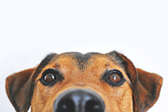

LOYAL Resuce
OUR FAVOURITE BREED IS RESCUED
Loyal Rescue, established in 2008, in Ontario, Canada, is a foster-based, all-volunteer rescue that strives to rehabilitate dogs both physically and emotionally, making them ready for adoption. We take in stray, abandoned, abused and surrendered dogs from a variety of backgrounds, placing them in loving foster homes for evaluation and care, all the while working toward their permanent placement with loving families.